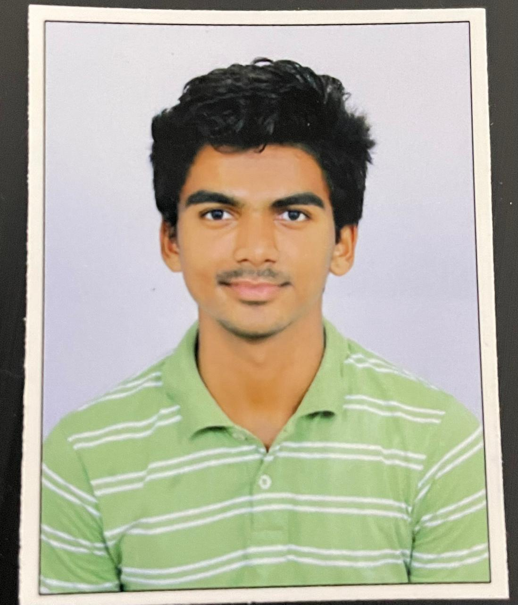

About Myself:
Aaryan Magar, currently pursuing B-tech from NIT Bhopal in the dept. of metallurgical engineering, with knowledge of Web D, C++, Graphic design and UI/UX design.Education:
- Class 10th: 760%
- Class 12th: 80%
- Joint entrance exam AIR 57978
- B-tech Metallurgical engineering
Skills:
- Graphic Design
- UI/UX Design
- C/C++
- Web development
- Adobe Photoshop and Illustrator
Hobbies: